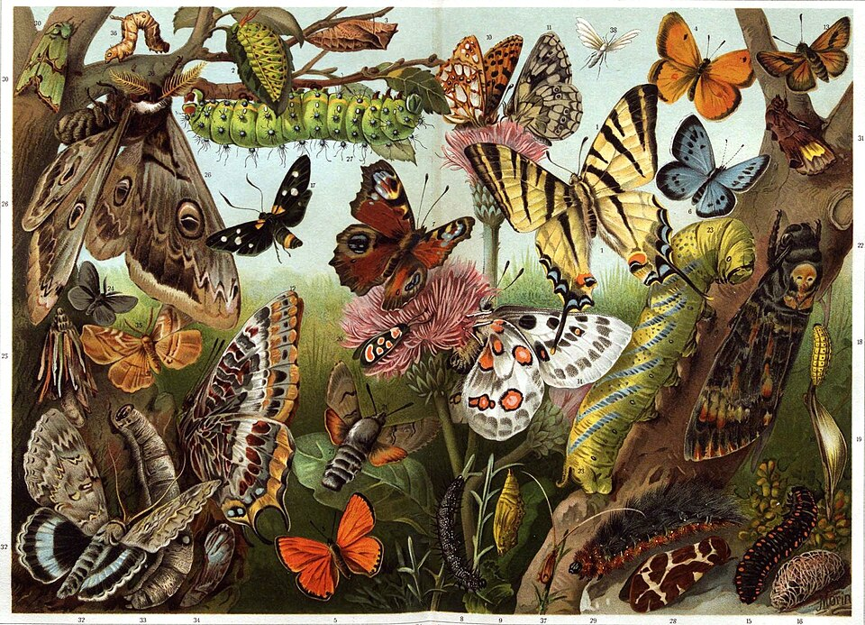

Добро пожаловать!
Чешуекры́лые, или ба́бочки (лат. Lepidóptera, от др.-греч. λεπίς, род. п. λεπίδος — чешуя и πτερόν — крыло), — отряд насекомых с полным превращением, наиболее характерная особенность представителей которого — наличие густого покрова хитиновых чешуек (уплощённых волосков) на передних и задних крыльях (при этом чешуйки расположены как на жилках, так и на крыловой пластинке между ними). Развитие — с полным превращением: имеются стадии яйца, личинки (называемой гусеницей), куколки и имаго. Личинка червеобразная, с недоразвитыми брюшными ногами, мощно склеротизованными покровами головы, грызущим ротовым аппаратом и парными шёлкоотделительными железами, выделения из которых, при соприкосновении с воздухом, образуют шёлковую нить.
Чешуекрылые, ископаемые остатки которых известны начиная с юрского периода, в настоящее время являются одним из наиболее богатых видами отрядов насекомых — в отряде насчитывается более 158 000 видов. Представители отряда распространены на всех континентах, за исключением Антарктиды.
Раздел энтомологии, изучающий чешуекрылых, называется лепидоптерологией.